Yazu, Tottori: things to do, food and stays
Yazu · Tottori
Yazu
Highlighted on the Tottori map.
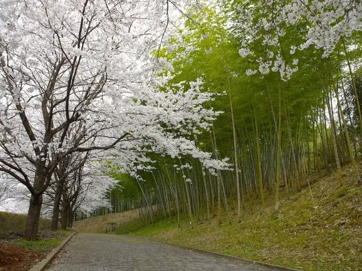
Stay
OOE VALLEY STAY
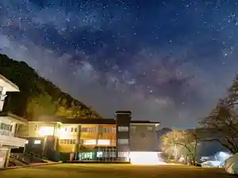
OOE VALLEY STAY
Inn in Shimotsuke, Yazu with a quiet countryside setting.
Dining
大江ノ郷自然牧場 ココガーデン
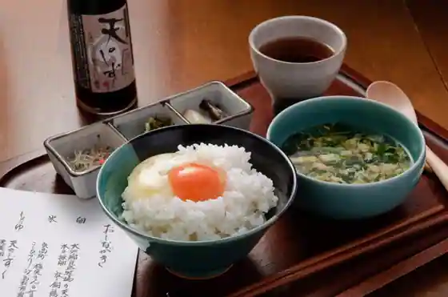
Oe No Sato Shizen Bokujo Koko Garden
大江ノ郷テラス
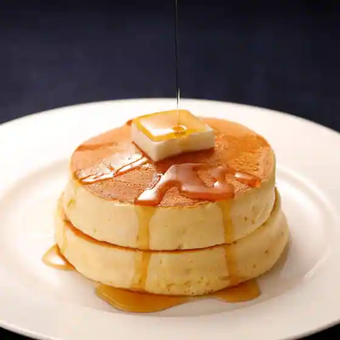
Oe No Sato Terrace
大江ノ郷製麺所
Oe No Sato Seimen Tokoro
カフェ&ダイニング サン
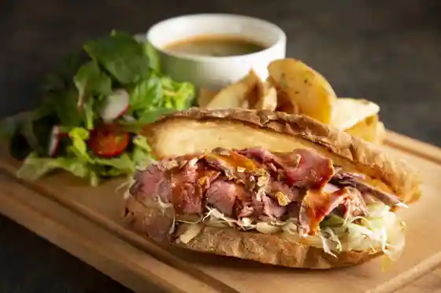
Cafe & Dining San
La Mano
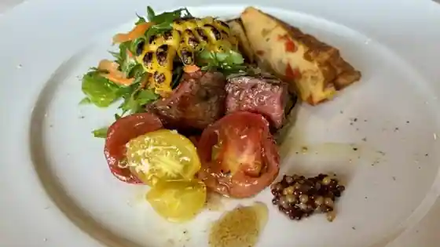
La Mano
ダイニングレストラン IRORI
Dining Restaurant IRORI
パティスリー&ブーランジェリー Cinq
Pateisuri & Buranjieri Cinq
ドレミベーカリー
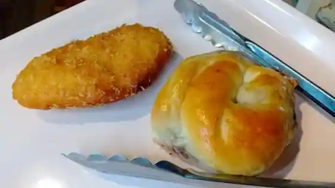
Doremi Bakery
さとううどん 郡家店
Satodon Gunke
和菓子処 甘味屋 郡家本店
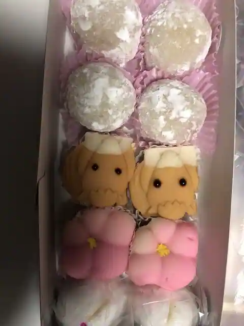
Wagashi Tokoro Amami Ya Gunke Hon
昇龍軒
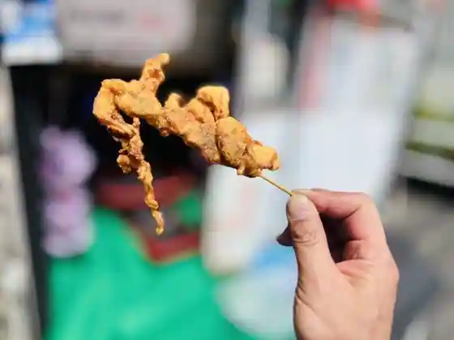
Noboru Ryu Ken
れんげ亭
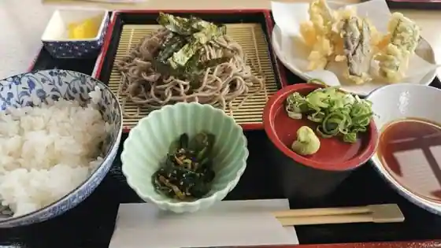
Renge Tei
福神喫茶店
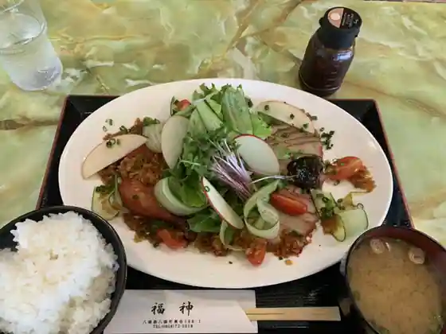
Fukujin Kissa
はっとう
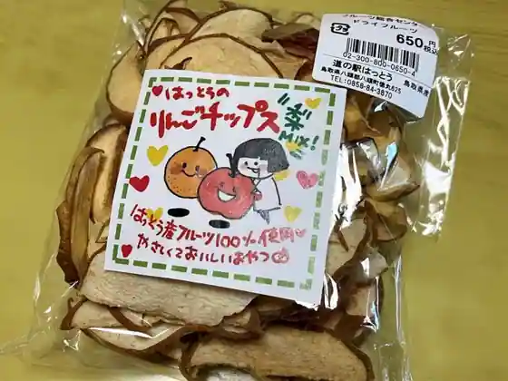
Hatto
谷口旅館
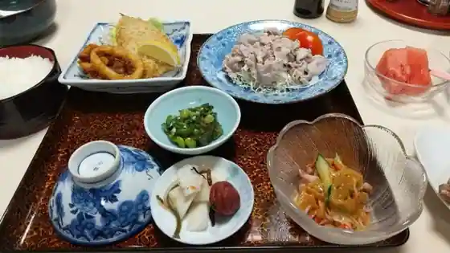
Taniguchi Ryokan
つきとおひさま
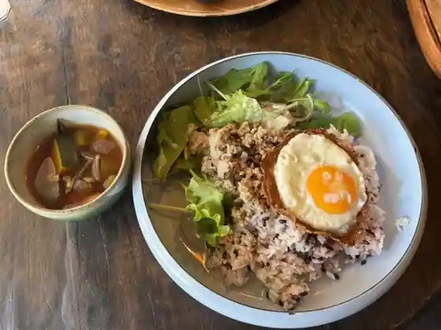
Tsukitohisama
麺鮮醤油房 周月 鳥取八頭店
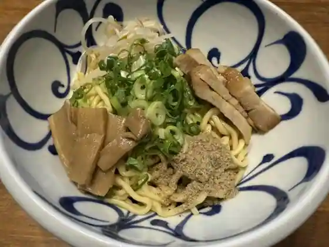
Men Sen Shoyu Bo Shu Gatsu Tottori Yagashira
豊味園 八頭店
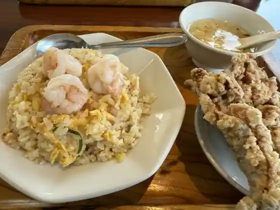
Yutaka Aji Sono Yagashira
メデタシ
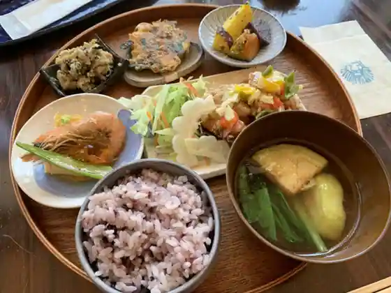
Medetashi
パティスリーカフェ デトゥール
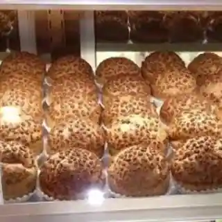
Pateisuri Cafe Detouru
もりのひと
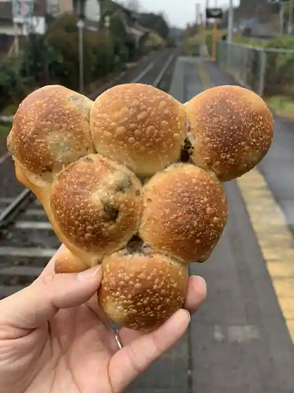
Morinohito
グリーン
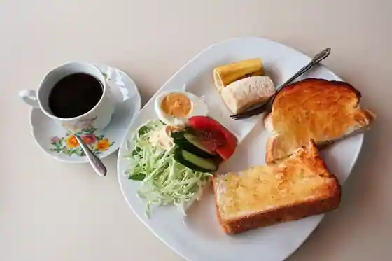
Gurin
Sights
Oe no Sato Shizen Ranch Koko Garden
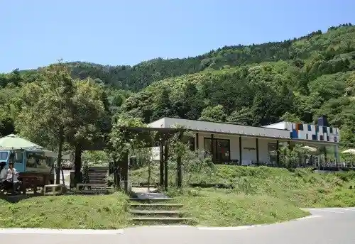
Wakasa Tetsudo Abe Eki
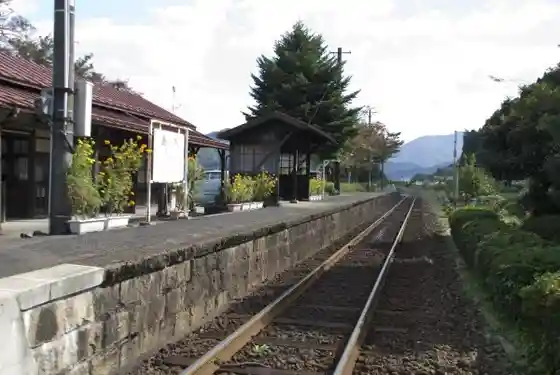
Roadside Station
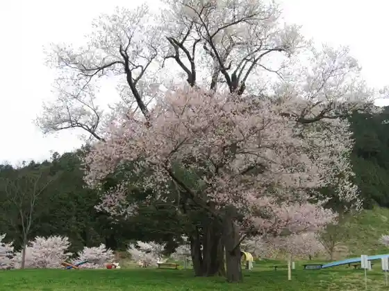
Furutsu Kari
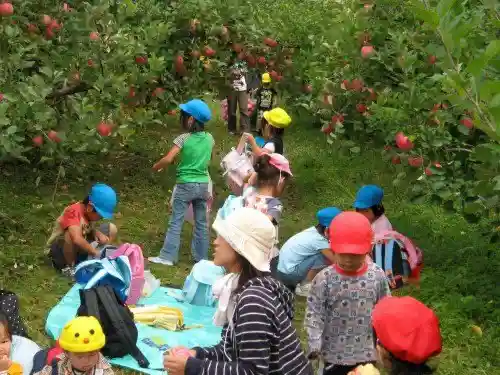
Funaoka Chikurin Park
Yamame Tsukami Tori
Taiju Tera no Urakutsubaki (Yuraku Tsubaki)
Chikurin Yoku, Kyanpu
Buna Hayashi De no Nature Experience, Kyanpu
Tenma Yama Park
Yazu Town Hall